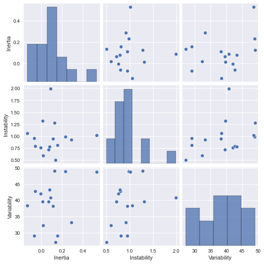
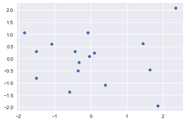

Emotion transitions study: Emotion responses cluster analysis¶
Rubia Guerra, Mar 24th 2022
Imports and data split¶
import matplotlib.pyplot as plt
import numpy as np
import os
import glob
import re
import pandas as pd
import scipy.io as sio
import seaborn as sns
from scipy import signal
from statsmodels.tsa import stattools
from sklearn.metrics import confusion_matrix, ConfusionMatrixDisplay
from sklearn.metrics import precision_recall_fscore_support
from tqdm import tqdm
plt.style.use("seaborn")
%matplotlib inline
def load_and_split_dataset(data_dir = 'data/p*', split_size=100, random_seed=128, split_ratio = .7, subject_choice_seed=128):
subject_data_files = glob.glob(os.path.join(data_dir, 'joystick.mat'))
subject_data_files.sort()
num_subjects = int(len(subject_data_files) * split_ratio)
# group data, pick subjects randomly
np.random.seed(subject_choice_seed)
all_subjects = np.random.choice(subject_data_files, size=num_subjects, replace=False)
subjects = re.findall('p\d+', ''.join(all_subjects))
print(f"Training set participants: {subjects}")
train = []
test = []
for subject_filename in subject_data_files:
mat_contents = sio.loadmat(subject_filename)
df = pd.DataFrame(mat_contents['var'], columns=['Timestamp', 'Feeltrace'])
if subject_filename in all_subjects:
train.append(df)
else:
test.append(df)
return train, test
[train, test] = load_and_split_dataset()
Training set participants: []
Defining emotion dynamics features¶
Refer to Houben M, Van Den Noortgate W, Kuppens P. The relation between short-term emotion dynamics and psychological well-being: A meta-analysis. Psychological bulletin. 2015 Jul;141(4):901.
class EmotionDynamics:
def __init__(self, Fs=30, interval=300, verbose=False):
self.lag = Fs*interval
self.verbose=verbose
def emotion_variability(self, X: np.array):
return np.std(X)
def emotion_instability(self, X: np.array):
return np.sum((X[1:] - X[:-1])**2)/(len(X)-1) # MSSD
def emotional_inertia(self, X, lag=None):
if lag is None:
lag = self.lag
# if !lag.isinstance(int):
# lag = int(lag)
return stattools.acf(X, nlags=lag)[lag] # Autocorrelation
def emotional_range(self, X: np.array):
return np.abs(min(X)-max(X))
def get_parameters(self, X: np.array):
parameters = {'Inertia':'', 'Instability':'', 'Range':'', 'Variability':''}
parameters['Inertia'] = self.emotional_inertia(X)
parameters['Instability'] = self.emotion_instability(X)
parameters['Range'] = self.emotional_range(X)
parameters['Variability'] = self.emotion_variability(X)
if self.verbose:
print(parameters)
return parameters
ED = EmotionDynamics(verbose=False)
ED.get_parameters(train[1]['Feeltrace'])
---------------------------------------------------------------------------
IndexError Traceback (most recent call last)
/var/folders/bl/2tw1vrc12mv_hqpbdf1j3wkw0000gn/T/ipykernel_6866/1970543145.py in <module>
----> 1 ED.get_parameters(train[1]['Feeltrace'])
IndexError: list index out of range
training_data = []
for subject in train:
feeltrace = np.array(subject['Feeltrace'])
training_data.append(ED.get_parameters(feeltrace))
test_data = []
for subject in test:
feeltrace = np.array(subject['Feeltrace'])
test_data.append(ED.get_parameters(feeltrace))
X_train = pd.DataFrame(training_data)
X_test = pd.DataFrame(test_data)
X_train
| Inertia | Instability | Range | Variability | |
|---|---|---|---|---|
| 0 | 0.012713 | 0.593234 | 185.0 | 32.349176 |
| 1 | -0.031526 | 1.278632 | 209.0 | 49.077727 |
| 2 | -0.138167 | 0.761333 | 225.5 | 42.022961 |
| 3 | -0.084194 | 0.714600 | 213.0 | 39.557379 |
| 4 | -0.026253 | 1.056519 | 184.0 | 38.449633 |
| 5 | 0.010896 | 0.808034 | 153.0 | 29.005620 |
| 6 | -0.035573 | 0.985158 | 223.0 | 48.939746 |
| 7 | 0.040190 | 0.952268 | 194.0 | 29.056105 |
| 8 | 0.055261 | 1.015773 | 184.0 | 48.688655 |
| 9 | -0.112607 | 0.796932 | 222.0 | 42.722726 |
| 10 | -0.015534 | 0.784511 | 219.0 | 43.330018 |
X = X_train.append(X_test).reset_index(drop=True)
X
| Inertia | Instability | Range | Variability | |
|---|---|---|---|---|
| 0 | 0.012713 | 0.593234 | 185.0 | 32.349176 |
| 1 | -0.031526 | 1.278632 | 209.0 | 49.077727 |
| 2 | -0.138167 | 0.761333 | 225.5 | 42.022961 |
| 3 | -0.084194 | 0.714600 | 213.0 | 39.557379 |
| 4 | -0.026253 | 1.056519 | 184.0 | 38.449633 |
| 5 | 0.010896 | 0.808034 | 153.0 | 29.005620 |
| 6 | -0.035573 | 0.985158 | 223.0 | 48.939746 |
| 7 | 0.040190 | 0.952268 | 194.0 | 29.056105 |
| 8 | 0.055261 | 1.015773 | 184.0 | 48.688655 |
| 9 | -0.112607 | 0.796932 | 222.0 | 42.722726 |
| 10 | -0.015534 | 0.784511 | 219.0 | 43.330018 |
| 11 | -0.048776 | 0.951712 | 215.0 | 38.263004 |
| 12 | 0.017515 | 1.989445 | 215.0 | 40.816129 |
| 13 | -0.065803 | 1.315396 | 220.0 | 39.632455 |
| 14 | 0.081192 | 0.922316 | 182.0 | 33.193777 |
| 15 | -0.021358 | 0.501430 | 163.0 | 27.154791 |
sns.pairplot(X)
<seaborn.axisgrid.PairGrid at 0x1216b4850>

import numpy as np
import matplotlib.pyplot as plt
from mpl_toolkits.mplot3d import Axes3D
fig = plt.figure(1, figsize=(4, 3))
plt.clf()
ax = Axes3D(fig, rect=[0, 0, 0.95, 1], elev=48, azim=134, auto_add_to_figure=False)
fig.add_axes(ax)
plt.cla()
ax.scatter(X_scaled[:, 0], X_scaled[:, 1], X_scaled[:, 2], c=X_scaled[:, 3], cmap=plt.cm.nipy_spectral, edgecolor="k")
ax.w_xaxis.set_ticklabels([])
ax.w_yaxis.set_ticklabels([])
ax.w_zaxis.set_ticklabels([])
plt.show()

Principal Component Analysis¶
import numpy as np
import matplotlib.pyplot as plt
from mpl_toolkits.mplot3d import Axes3D
from sklearn import decomposition
fig = plt.figure(1, figsize=(4, 3))
plt.clf()
ax = Axes3D(fig, rect=[0, 0, 0.95, 1], elev=48, azim=134, auto_add_to_figure=False)
fig.add_axes(ax)
plt.cla()
pca = decomposition.PCA(n_components=3)
pca.fit(X_scaled)
X = pca.transform(X_scaled)
ax.scatter(X[:, 0], X[:, 1], X[:, 2], cmap=plt.cm.nipy_spectral, edgecolor="k")
ax.w_xaxis.set_ticklabels([])
ax.w_yaxis.set_ticklabels([])
ax.w_zaxis.set_ticklabels([])
plt.show()

Gaussian Mixture Model¶
from sklearn.preprocessing import StandardScaler
scaler = StandardScaler()
X_scaled = scaler.fit_transform(X)
from yellowbrick.cluster import SilhouetteVisualizer
from sklearn.cluster import KMeans
from sklearn import metrics
"""
================================
Gaussian Mixture Model Selection
================================
This example shows that model selection can be performed with
Gaussian Mixture Models using information-theoretic criteria (BIC).
Model selection concerns both the covariance type
and the number of components in the model.
In that case, AIC also provides the right result (not shown to save time),
but BIC is better suited if the problem is to identify the right model.
Unlike Bayesian procedures, such inferences are prior-free.
In that case, the model with 2 components and full covariance
(which corresponds to the true generative model) is selected.
"""
import itertools
from scipy import linalg
import matplotlib.pyplot as plt
import matplotlib as mpl
from sklearn import mixture
lowest_bic = np.infty
bic = []
n_components_range = range(1, 7)
cv_types = ["spherical", "tied", "diag", "full"]
for cv_type in cv_types:
for n_components in n_components_range:
# Fit a Gaussian mixture with EM
gmm = mixture.GaussianMixture(
n_components=n_components, covariance_type=cv_type
)
gmm.fit(X_scaled)
bic.append(gmm.bic(X_scaled))
if bic[-1] < lowest_bic:
lowest_bic = bic[-1]
best_gmm = gmm
bic = np.array(bic)
color_iter = itertools.cycle(["navy", "turquoise", "cornflowerblue", "darkorange"])
clf = best_gmm
bars = []
# Plot the BIC scores
plt.figure(figsize=(15, 15))
spl = plt.subplot(2, 1, 1)
for i, (cv_type, color) in enumerate(zip(cv_types, color_iter)):
xpos = np.array(n_components_range) + 0.2 * (i - 2)
bars.append(
plt.bar(
xpos,
bic[i * len(n_components_range) : (i + 1) * len(n_components_range)],
width=0.2,
color=color,
)
)
plt.xticks(n_components_range)
plt.ylim([bic.min() * 1.01 - 0.01 * bic.max(), bic.max()])
plt.title("BIC score per model")
xpos = (
np.mod(bic.argmin(), len(n_components_range))
+ 0.65
+ 0.2 * np.floor(bic.argmin() / len(n_components_range))
)
plt.text(xpos, bic.min() * 0.97 + 0.03 * bic.max(), "*", fontsize=14)
spl.set_xlabel("Number of components")
spl.legend([b[0] for b in bars], cv_types)
# Plot the winner
splot = plt.subplot(2, 1, 2)
Y_ = clf.predict(X_scaled)
for i, (mean, cov, color) in enumerate(zip(clf.means_, clf.covariances_, color_iter)):
v, w = linalg.eigh(cov)
if not np.any(Y_ == i):
continue
plt.scatter(X_scaled[Y_ == i, 0], X_scaled[Y_ == i, 1], 20, color=color)
# # Plot an ellipse to show the Gaussian component
# angle = np.arctan2(w[0][1], w[0][0])
# angle = 180.0 * angle / np.pi # convert to degrees
# v = 2.0 * np.sqrt(2.0) * np.sqrt(v)
# ell = mpl.patches.Ellipse(mean, v[0], v[1], 180.0 + angle, color=color)
# ell.set_clip_box(splot.bbox)
# ell.set_alpha(0.5)
# splot.add_artist(ell)
plt.legend(range(len(clf.means_)))
plt.xticks(())
plt.yticks(())
plt.title(
f"Selected GMM: {best_gmm.covariance_type} model, "
f"{best_gmm.n_components} components"
)
# plt.subplots_adjust(hspace=0.55, bottom=0.02)
plt.show()
